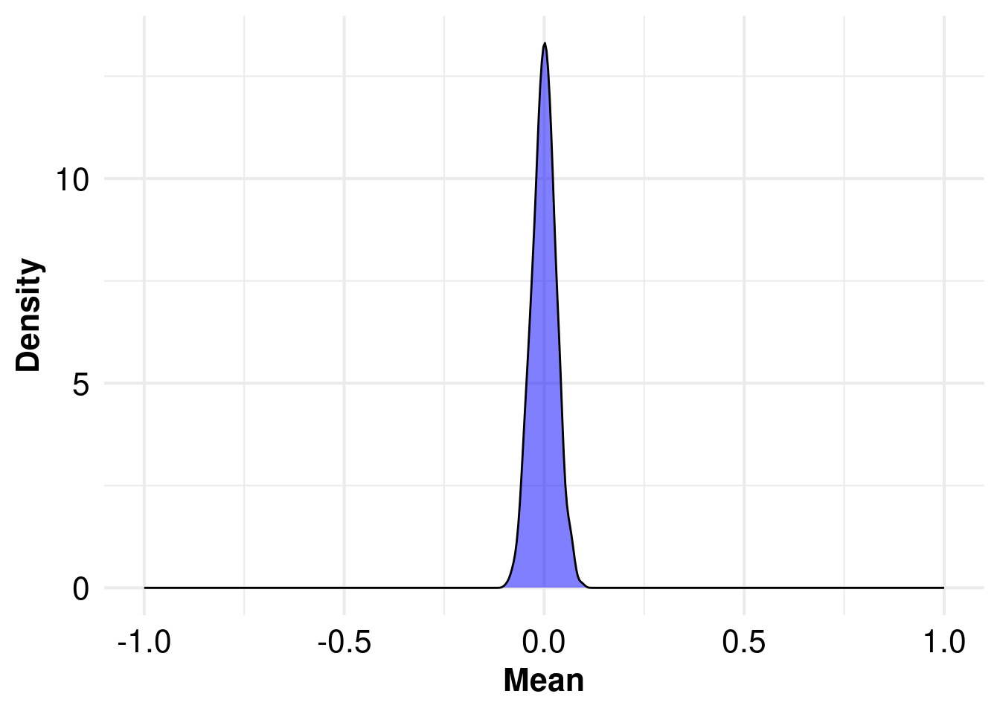

Overview, Key Concepts and Objectives
1 EVA: Extreme Value Analysis
1.1 🌊 EVA in Hydrology
EVA is a powerful statistical tool to analyze rare events in hydrology and climate science. It focuses on understanding the frequency and intensity of extreme events.
1.2 📌 Key Concepts of EVA
1.2.1 📈 Block Maxima Approach
Selects the maximum value in fixed time blocks (e.g., annual maximum flow or rainfall) → Fits data to distributions like Gumbel or GEV.
1.2.2 📉 Peak Over Threshold (POT) Method
Considers all events exceeding a predefined threshold → More data points → Fitted to Generalized Pareto Distribution (GPD).
1.3 🎯 Objectives of EVA
🔁 Estimate Return Periods: Assess the intensity of rare events expected to be exceeded, on average, once every N years (e.g., for example, a 100-year event corresponds to a 1% annual probability of being exceeded).
📊 Construct Frequency Curves: Fit statistical distributions (e.g., GEV, Gumbel, Log-Pearson Type III) to observed extremes to relate event magnitude to exceedance probability.
🧰 Support Risk-Based Design: Inform engineering design criteria (e.g., for dams, levees, drainage systems) based on scientifically justified extreme thresholds
1.4 🏗️ Real-world Applications of EVA
🏞️ Infrastructure Design: Design dams, bridges, culverts based on expected extreme flows.
💧 Water Resource Management: Plan for droughts, reservoir operations, and sustainable use.
⚠️ Risk Assessment & Planning: Develop floodplain zoning, disaster risk reduction strategies.
🧭 Policy & Climate Adaptation: Inform government strategies and early warning systems in a changing climate.
2 EVT: Extreme Value Theory
EVA is based on EVT
Imagine we have daily observational data for a random variable (e.g., river discharges, precipitations, etc.) for many years. EVT suggests that the extreme values of this variable are asymptotically close to one of three types of extreme value distributions, regardless of the original distribution of daily flows. EVT helps us estimate the probability of rare, high-flow events like floods.



Illustration of the Extreme Value Theory (EVT)
Independance (absence of autocorrelation) and Stationarity of extreme value time series are the underlying assumptions of EVA.
3 Practical Objectives of this Module
📊 Apply sampling approaches for extreme events
Use annual maxima and peaks-over-threshold (POT) methods, including threshold selection and declustering to identify independent events.
📈 Understand trend detection in extreme streamflow series
Gain insight into statistical methods for identifying trends in hydrometeorological extremes.
🧪 Compare non-parametric and parametric techniques
Implement and contrast the non-parametric test (e.g., Mann-Kendall) with parametric (distribution-based) models such as Generalized Extreme Value Distribution (GEV) and Generalized Pareto Distribution (GPD) in a non-stationary framework.
🔍 Interpret statistical significance
Evaluate the reliability and meaning of trend detection results under various statistical assumptions.
💻 Use open-source R packages for implementation
Apply all methods in practice using reproducible, open-source tools within the R environment.